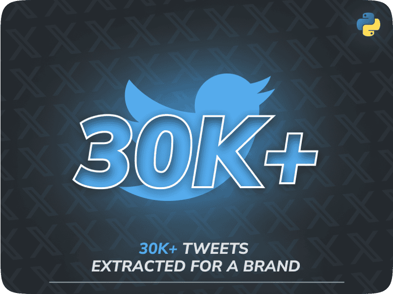

Twitter Sentiment Scraper
Python, Tweepy/Snscrape
This project implements an automated system that collects over 30,000 tweets to facilitate comprehensive sentiment analysis. By efficiently gathering and structuring vast amounts of social media data, it delivers a clean and optimized dataset designed to analyze brand perception accurately. This enables businesses to monitor public sentiment, identify trends, and make data-driven decisions for marketing and reputation management.

Key Metrics
Technologies Used
How It Works
Tweet Collection
Tweepy and Snscrape pull tweets matching target keywords and brand mentions, gathering over 30,000 posts per run.
Data Cleaning & Structuring
The Python pipeline filters duplicates and formats the raw tweets into a clean, structured dataset ready for analysis.
Sentiment Analysis Output
The structured dataset feeds sentiment analysis, revealing brand perception trends businesses can use to guide decisions.
Results & Impact
Business Impact
Marketing and brand teams need a reliable read on public sentiment, but manually tracking tens of thousands of mentions across social media is impractical at any meaningful scale. By automatically collecting and structuring large volumes of tweets, this scraper gives analysts a clean dataset they can act on immediately rather than spending days on data collection. Teams can spot shifts in brand perception sooner and base marketing and reputation decisions on evidence instead of guesswork.